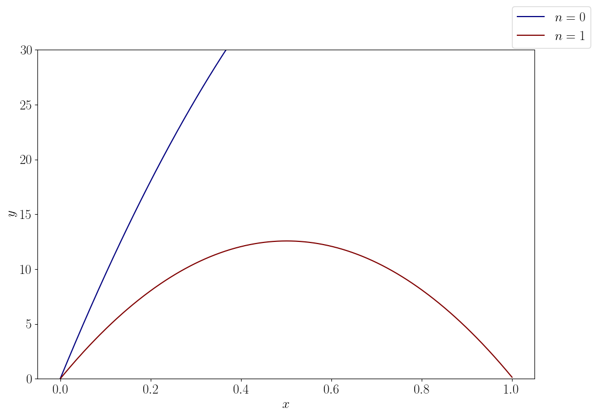
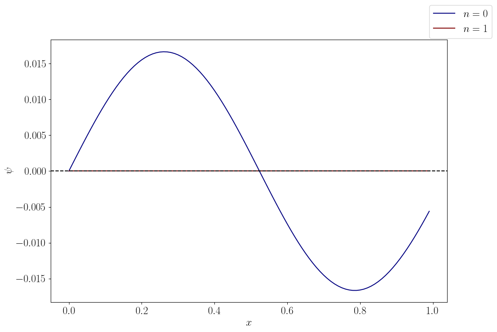
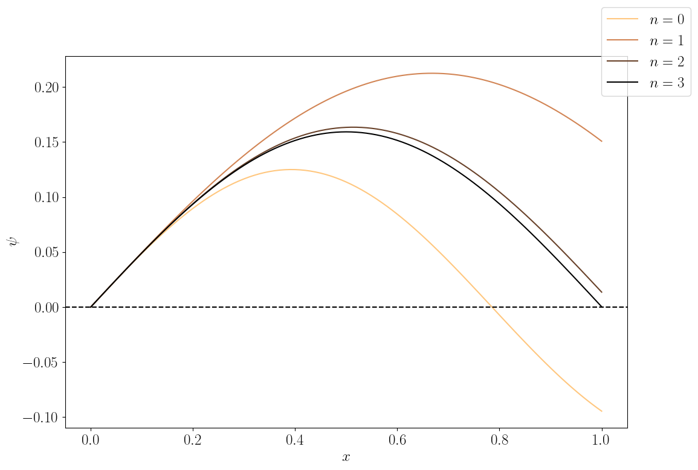

For a 1st order ODE, the inital value $y_0$ completely determines the solution. However, a 2nd order ODE requires two conditions.
One can be given an initial condition with both $y_0$ and $y'_0$. Or one can be given the values of $y$ at two end points $a$ and $b$.
For example, projectile motion:
$$ \frac{d^2y}{dt^2} = -g,\quad \frac{d^2x}{dt^2} = 0 $$There are two ways to pose the problem:
How do you find out the way to shoot a projectile, so that it lands at a target location?
You take a trial shot. Depending on where it lands, adjust your aim and try again!
To make it mathematically more precise. Suppose we want to solve the following BVP:
$$ \frac{d^2y}{dt^2} = f(t, y, y'),\quad y(a) = \alpha,\quad y(b) = \beta $$Our goal is to find the correct initial condition $y'(a)$ such that we land at $y(b) = \beta$ when solving this problem as an initial value problem.
Fortunately, we already know how to solve initial value problems. We now have essentially a root finding problem:
$$ F(y_0') = \beta $$This complicated function $F$ represents taking the initial guess of $y'_0$ and calculating the final value of the IVP at $x = b$.
How to solve this nonlinear algebraic equation?
We can use bisection method to find the solution, if the equation is not too complicated.
We start with an interval for $y'(a)$, $[y'_\mathrm{min}, y'_\mathrm{max}]$ where we are sure the solution is within the interval.
We then calculate the midpoint $y'_\mathrm{mid} = (y'_\mathrm{min} + y'_\mathrm{max})/2$. Solve the IVP with $y'_\mathrm{mid}$ and see if the final value $y(b)$ is greater or less than $\beta$.
If it is greater, then replace $y'_\mathrm{max}$ with $y'_\mathrm{mid}$. Otherwise, replace $y'_\mathrm{min}$ with $y'_\mathrm{mid}$. Calculate a new midpoint and repeat until target tolerance.
In order to make sure the final step lands on $b$, dense output is required when using an adaptive method.
Alternatively, Newton-Raphson method can be used.
Quick review: $$ x_{n+1} = x_n - \frac{F(x_n)}{F'(x_n)} $$
Unfortunately, it is likely unfeasible to find the derivative of the function $F$ analytically. We can approximate the derivative numerically.
Shooting with Newton's method:
Projectile using Newton's method:
For a linear equation, usually Newton's method converges in one iteration.
A variation of the boundary value problem is an eigenvalue problem:
$$ \frac{d^2y}{dt^2} - f(t, y, y') = \lambda y $$An example is the time-independent Schrödinger equation:
$$ -\frac{\hbar^2}{2m}\frac{d^2\psi}{dx^2} + V(x)\psi = E\psi $$What is the difference between a boundary value problem and an eigenvalue problem?
Consider the Schrödinger equation in an infinite potential well:
$$ -\frac{\hbar^2}{2m}\frac{d^2\psi}{dx^2} = E\psi,\quad \psi(0) = \psi(L) = 0 $$Schrödinger equation in an infinite potential well
For some values of $E$, there are no solutions at all, regardless of the initial shooting condition. The only solution is the trivial one $\psi = 0$.
On the other hand, for specific values of $E$ (eigenvalues), we can get a solution with any initial $d\psi/dx$.
The strategy now becomes to vary the eigenvalue instead of initial $y'$ in our shooting method.
We need an extra condition to uniquely determine the solution. For Schrödinger equation, the condition is $\int |\psi(x)|^2\,dx = 1$.
Using shooting method to solve eigenvalue problems:
This is the result of varying the eigenvalue $E$:
If one wants to apply the overall normalization condition, then a numerical integral can be computed, and we can normalize the solution using the value of the integral.
For a system of ODEs:
$$ \frac{d\mathbf{y}}{dt} = \mathbf{f}(t, \mathbf{y}),\quad \mathbf{y}(a) = \mathbf{y}_0,\quad \mathbf{y}(b) = \mathbf{y}_1 $$Newton-Raphson involves a matrix inversion:
$$ \mathbf{y}'_\mathrm{new} = \mathbf{y}'_\mathrm{old} - \mathbf{J}^{-1}\mathbf{F} $$where $\mathbf{J}$ is the Jacobian matrix of $\mathbf{F}$, computed numerically.